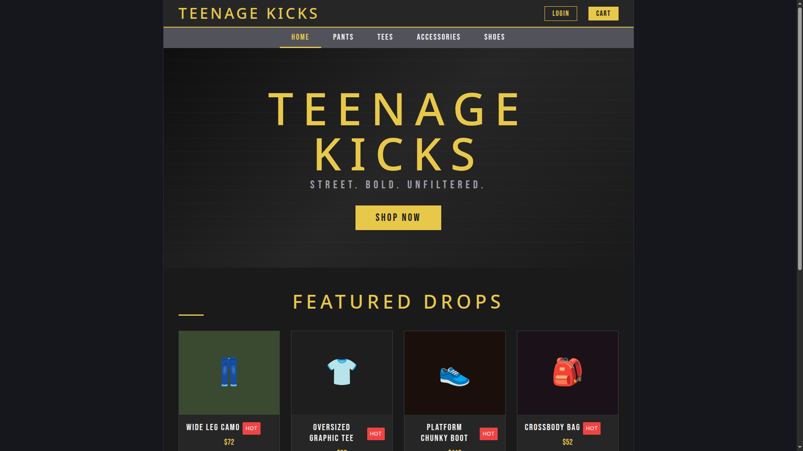

Peer Review 2
Casenhiser, Marek
Site Preview

Evaluation
- Website Checklist Review
- The site uses a clear structure with a header, navigation bar, main content area, and footer — all implemented through React components and inline styles.
- Navigation is consistent across all sections and updates the displayed content instantly through state changes.
- Typography, spacing, and color choices create a strong, cohesive streetwear aesthetic.
- All interactive elements (buttons, cards, cart panel, login modal) respond smoothly and behave as expected.
- Images are represented through styled placeholders and icons, which keeps the layout visually consistent.
- The site is responsive and maintains readability on smaller screens.
- Headings and text maintain a clear hierarchy, improving scannability.
- Client Project – Part 2 Requirements
- Five functional pages: Although built as a single‑page React app, the site includes five fully developed content sections: Home, Pants, Tees, Accessories, and Shoes.
- Home page structure: The homepage includes a hero section, featured products, and promotional content — all substantial and visually engaging.
- Navigation bar: Present at the top of the site, consistent across all sections, and updates the displayed content correctly.
- Four additional pages: Each product category displays a full grid of items with names, prices, tags, and Add‑to‑Cart functionality.
- Content relevance: All sections support the theme of a streetwear ecommerce storefront and feel cohesive.
- Separate files: CSS and JS are separated appropriately (index.css, app.css, App.jsx, main.jsx), meeting the assignment requirement.
- Interactivity: The cart panel and login modal add meaningful functionality beyond static content.
- Additional Observations & Suggestions
- The inline styling system is extremely consistent — it gives the site a polished, intentional look.
- The cart panel is well‑designed and intuitive, with clear pricing and item removal.
- The login modal is clean and fits the aesthetic, even though it doesn’t yet connect to backend logic.
- Consider adding small hover effects or transitions to the navigation links to match the polish of the product cards.
- The site could benefit from a dedicated About or Brand Story section to give users more context about “Teenage Kicks.”
- Marek, your visual direction is strong — adding a few real product images later could elevate the presentation even more.
- Stop / Start / Continue
- Stop: Avoid relying entirely on inline styles — moving some shared styles into CSS could improve maintainability.
- Start: Start adding small accessibility enhancements, such as ARIA labels for interactive elements.
- Continue: Continue using strong visual hierarchy and consistent branding — it makes the site feel professional and cohesive.
Review completed by: Amir Janid Homsi
Date: April 19, 2026